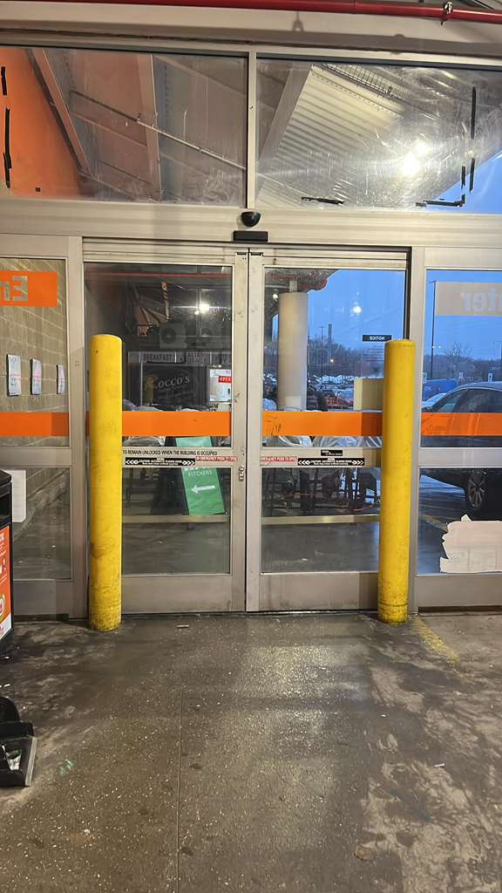
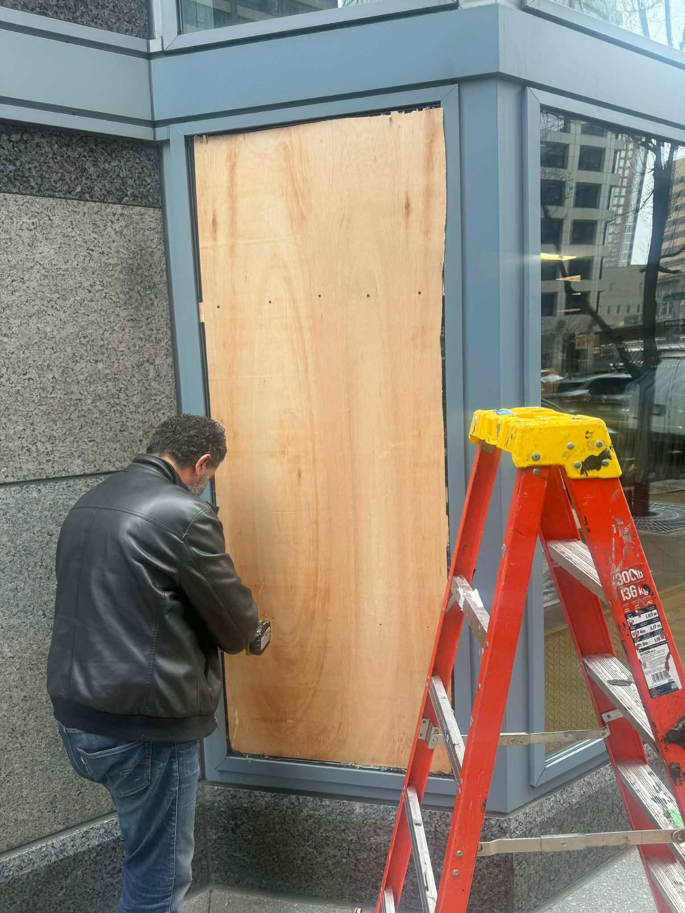
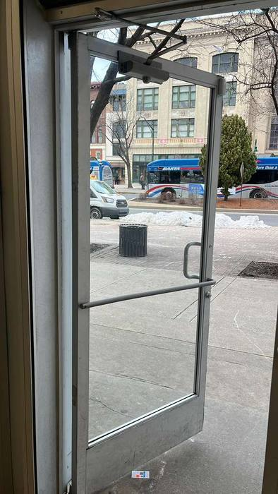
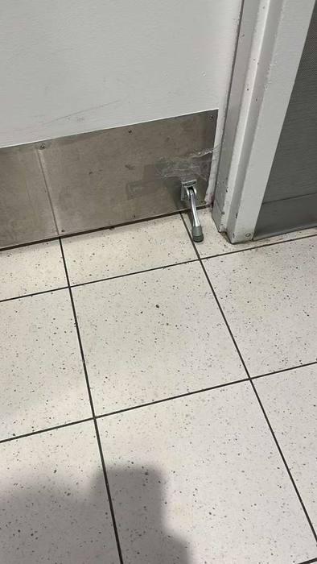

Emergency Glass Repair
24/7 dispatch for shattered storefronts, broken windows, and unsafe door glass openings.
24/7 Emergency Glass & Door Services
Broken storefront glass, failed door hardware, unsecured entries, and lock emergencies cost you time and revenue. If you are searching for glass repair near me, glass window repair, mobile glass repair, or locksmith near me, call now for immediate dispatch and a live ETA.
Core Services

24/7 dispatch for shattered storefronts, broken windows, and unsafe door glass openings.

Door closers, hinges, pivots, latches, panic hardware, and secure-entry restoration.

Secure exposed openings quickly while replacement materials are measured and ordered.

Tempered and laminated glass repair for retail, restaurant, and office storefronts.

Hardware troubleshooting and replacement for better security, accessibility, and reliability.

Commercial and residential lockouts, lock changes, rekeys, and mobile locksmith support for urgent entries.
Service Area Coverage
Conversion Funnel
Fastest Response
Calling is fastest for urgent jobs. For scheduled work, use the form and we will confirm scope quickly.
For active hazards, keep people clear of broken glass and wait for technician instructions.
Find Us Fast
Glass repair near me: We cover urgent and scheduled calls with phone-first dispatch.
Customers often search for glass window repair, mobile glass repair, and glass repair on the move when they need fast local help.
We also handle locksmith mobile, locksmith near me, and DC locksmith calls for lockouts and urgent access issues.
Service details are clear and consistent so people can find reliable answers in ChatGPT, Claude, Perplexity, and traditional search results.
Emergency glass, emergency door repair, board-up, and mobile locksmith services are available 24/7 in Arlington, Washington DC, Baltimore, and surrounding DMV service areas. Call now to turn an emergency into a secure, controlled repair plan.